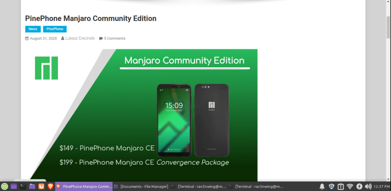

your number one source for linux phone news
~ ~ ~ News | Operating Systems | Software | Devices | Contact Us | About Us ~ ~ ~
As shipping for the Pinephone PostmarketOS Community Edition kicks off with many eager customers receiving their DHL shipment notices, the good folks at Pine64 have already announced the next Pinephone that will be available for pre-order starting sometime in September:
The PinePhone Manjaro Community Edition.
Much like the new PostmarketOS CE PinePhone, the Manjaro Community Edition will also have two different purchasing options for those wanting a PinePhone. You can choose from:
These are the same options that were available for the PostmarketOS CE device, and they proved hugely popular.
With this exciting announcement from Pine64 and the great folks who continue developing Manjaro Linux for ARM devices, you now have yet another chance to grab yourself a brand new PinePhone next month if you missed out on the last round.
Remember, you will also be supporting the Manjaro development team with your purchase, as Pine64 donates $10 for every PinePhone sold to the partner project whose operating system ships installed on the device.
As always, you will also be free to try other operating systems easily without affecting your Manjaro installation by flashing an image of another operating system to an SD card. This is a simple process, and one we have covered before here on FOSSphones.
For more information about this exciting news, you can check out Manjaro’s announcement on their forums, as well as follow along with Manjaro Pinephone development on the Manjaro For PinePhone section of the Pine64 PinePhone Software forum.